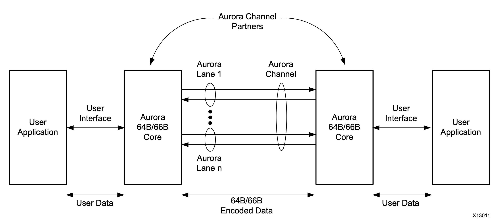
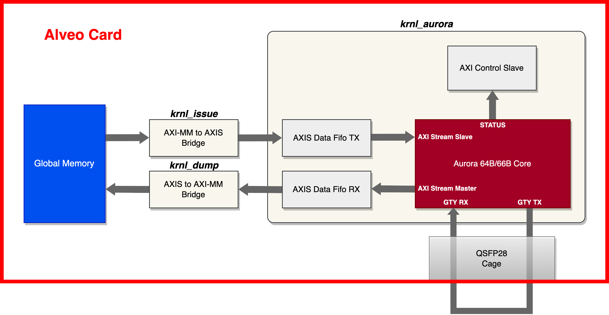

Vitis™ アプリケーション アクセラレーション開発フロー チュートリアル |
Vitis フローを使用した Alveo での Aurora IP の使用¶
バージョン: Vitis 2022.1
入門チュートリアル
Aurora 64B/66B は、マルチギガビット リンク向けの軽いシリアル通信プロトコルです。Alveo カードでは、Aurora IP が GT トランシーバー (GTY など) を利用して高速データ転送を実現します。Alveo アクセラレータ カードには、1 つまたは 2 つの QSFP28 ポートがあり、FPGA の GT トランシーバーに接続されています。Alveo カードに Aurora IP を統合させ、各 QSFP28 ポートで最大 100 Gbps のデータ スループットで、カード間の全二重通信を実現できます。Aurora IP は、データ転送用の標準的な AXI Stream ポートをユーザー アプリケーションに提供します。またユーザーは、Vitis フローを用いて、Aurora IP を Vitis のターゲット プラットフォームに基づいたアクセラレータ デザインに簡単に統合できます。
Aurora 64B/66B の通信チャネルのブロック図は次のとおりです。

Aurora 64B/66B プロトコルの詳細は、Aurora 64B/66B プロトコル仕様を参照してください。
Aurora 64B/66B IP の詳細は、Aurora 64B/66B IP 製品ガイドを参照してください。
このチュートリアルでは、提供のサンプル デザインを使用して、Vitis フローを用いた Aurora IP を Alveo アクセラレータ カードに統合するための手順を順番に説明します。このサンプル デザインには、レーン レートが 10 Gbps の 4 レーンの Aurora カーネルが統合されています (合計 40 Gbps のスループットを達成)。このチュートリアルでは、Aurora IP の生成から、Aurora IP のリファレンス RTL 最上位モジュール、サンプルのテスト システムの統合、サンプルの x86 ホスト プログラムまでのステップを説明します。次はサンプル デザインのハードウェア ブロック図です。

ハードウェア デザインには 3 つのカーネルがあります。
krnl_aurora: これは RTL カーネルです。krnl_aurora は、Aurora コア IP、データ送信用 AXIS データ FIFO、データ受信用 AXIS データ FIFO、Aurora IP ステータス リードバック用 AXI コントロール スレーブをインスタンシエートします。
strm_issue: これは HLS カーネルで、データ送信用に AXI マスターから AXI ストリームへの単純なブリッジをインプリメントします。オンボード グローバル メモリからデータを読み出して Aurora コアに送信します。
strm_dump: これは HLS カーネルで、データ受信用に AXI ストリームから AXI マスターへの単純なブリッジをインプリメントします。Aurora コアからデータを受信して、オンボード グローバル メモリへ書き込みます。
このサンプル デザインでは、ホストがブロック データをオンボード グローバル メモリに転送して、Aurora コアにロードした後、ループバックデータをオンボード グローバル メモリに格納して整合性チェックを実行します。デザインを実際にハードウェア上でテストするには、Alveo カードの QSFP ポートに挿入した 40 Gbps QSFP+ (0dB、0W) ループバック モジュールが必要です。Alveo カードに QSFP ポートが 2 つある場合は、モジュールを QSFP 0 に挿入してください。ループバック モジュールは次の画像のようになります。

このデザインは Ubuntu 18.04/20.04 と Redhat/CentOS 7/8 システムに対応し、次の XRT とターゲットプラットフォームのバージョンで検証されています。
XRT 2.13.466
Alveo U200: xilinx_u200_gen3x16_xdma_2_202110_1
Alveo U250: xilinx_u250_gen3x16_xdma_4_1_202210_1
サンプル デザインのすべてのフローはマンド ラインとして提供され、Makefile と Tcl スクリプトを利用します。このチュートリアルのいくつかのステップでは、明確に説明するために GUI 操作が使用されています。デザイン ディレクトリにあるファイルは次のとおりです。
├── hls
│ ├── strm_dump.cpp # HLS C source code for strm_dump kernel
│ └── strm_issue.cpp # HLS C source code for strm_issue kernel
├── host
│ └── host_krnl_aurora_test.cpp # x86 host program
├── krnl_aurora_test.cfg # Vitis link configuration file
├── Makefile # Makefile for full flow
├── README.md
├── rtl
│ ├── krnl_aurora_control_s_axi.v # Verilog source code for AXI control slave module
│ └── krnl_aurora.v # Verilog source code for top level of krnl_aurora
├── tcl
│ ├── gen_aurora_ip.tcl # Tcl script to generate Aurora IP
│ ├── gen_fifo_ip.tcl # Tcl script to generate AXI stream data FIFO
│ └── pack_kernel.tcl # Tcl script to package the RTL kernel krnl_aurora
└── xdc
└── aurora_64b66b_0.xdc # additional XDC file for krnl_aurora
注記: RedHat/CentOS 7 を使用している場合、デフォルトでインストールされる GCC のバージョンは 4.x.x です。x86 ホスト プログラムをコンパイルする前に、次のコマンドで GCC 7 をインストールし、GCC 7 に切り替えておく必要があります。
sudo yum install centos-release-scl
sudo yum install devtoolset-7-gcc-c++
scl enable devtoolset-7 bash
krnl_aurora カーネルの開発¶
krnl_aurora はサンプル デザイン用の中心になるカーネルです。前述のブロック図から、krnl_aurora には、Aurora 64B/66B IP、データ送信用 AXI Stream Data FIFO IP、データ受信用 AXI Stream Data FIFO IP、Aurora ステータス モニター用 AXI コントロール スレーブの 3 つのサブモジュールが含まれています。
Aurora 64B/66B IP¶
それでは、Aurora IP を生成してみましょう。IP コンフィギュレーション オプションをより明確に説明するため、まず、U200 カードを例として、Vivado GUI で Aurora IP コンフィギュレーション オプションを確認します。
Vivado GUI を起動し、Tcl コンソール ウィンドウで次のコマンド例を入力し、Alveo カードに対応する FPGA パーツを使用してプロジェクトを作成してください。次のコマンド ラインでは、xcu200-fsgd2104-2-e が U200 カードの FPGA パーツ名となります。
create_project aurora_test -part xcu200-fsgd2104-2-e
プロジェクト作成後、左側のプロジェクト マネージャーの IP カタログをクリックし、リストの中から Aurora 64B66B IP を検索して、ダブルクリックします。その後、Aurora 64B66B IP コンフィギュレーション ウィンドウが開くので、次に説明するようにオプションを確認し、必要なオプションを選択します。
[Core Options] タブを次のように設定します。
[Physical Layer]
GT Type: GTY (デフォルト)
Line Rate (Gbps): 10.3125 (デフォルト)
Column Used: right (デフォルト)
Lanes: 4 (サンプル デザインでは 4 レーンを使用しています)。
Starting GT Quad: Quad X1Y5 (デフォルト。Vitis のリンク プロセスにより適切な GT クアッドが選択されます)。
Starting GT Lane: X1Y20 (デフォルト。Vitis のリンク プロセスにより適切な GT レーンが選択されます)。
GT Refclk Selection: MGTREFCLK0 of Quad X1Y5 (デフォルト。Vitis のリンク プロセスにより適切な GT Refclk が選択されます)。
GT Refclk (MHz): 161.1328125 (Alveo カード上の GT クロック ソース)
INIT clk (MHz): 100 (U200 ターゲット プラットフォームで提供されている 100 MHz クロックを INIT クロックとして使用します)。
Generate Aurora without GT: 何も選択せずにそのままにしておきます (Aurora IP に GT トランシーバーを含める必要があります)。
[Link Layer]
Dataflow Mode: Duplex (デフォルト)
Interface: Streaming (このサンプル デザインでは、ストリーミング モードを使用します)。
Flow Control: None (デフォルト)
USER K: 何も選択せずにそのままにしておきます (サンプル デザインでは USER-K を使用していません)。
Little Endian Support: 何も選択せずにそのままにしておきます (サンプル デザインではリトル エンディアンのサポートは不要です)。
エラー検出
CRC: 何も選択せずにそのままにしておきます (サンプル デザインでは CRC を使用していません)。
[Debug and Control]
DRP Mode: Native (実際には、このサンプル デザインでは DRP 関数は使用されません)。
Vivado Lab Tools: 何も選択せずにそのままにしておきます (サンプル デザインでは、この機能を使用する必要はありません)。
Additional transceiver control and status ports: 何も選択せずにそのままにしておきます (サンプル デザインでは、この機能を使用する必要はありません)。
[Shared Logic] タブを次のように設定します。
[Shared Logic]
共有ロジックをコアに含めます (サンプル デザインでは、単一の Aurora モジュールを使用します)。
以上の設定で、Aurora 64B66B の IP コンフィギュレーション ウィンドウは次のようになります。

コンフィギュレーションされた IP には、AXI ストリーム スレーブ ポートと AXI ストリーム マスター ポートがあり、データ幅は 256 ビット、すなわち 1 レーンあたり 64 ビットとなります。これら 2 つの AXI ストリーム ポートは 161.1328125 MHz の user_clk ドメインで動作し、これはレーン速度 10.3125 Gbps の 1/64 に相当します。
[OK] をクリックすると、Aurora IP のコンフィギュレーションが完了します。実際に必要なのは、生成された aurora_64b66b_0.xci ファイルで、これはあとの IP パッケージング段階で使用されます。前述したように、このチュートリアルでは Aurora IP の生成ステップは Vivado Tcl スクリプトで処理されます。そこで、上記の GUI フローと同じファイルを生成するために使用するスクリプト ファイル ./tcl/gen_aurora_ip.tcl を見てみましょう。このスクリプトの主な部分は次のようになっています。
create_ip -name aurora_64b66b \
-vendor xilinx.com \
-library ip \
-version 12.0 \
-module_name aurora_64b66b_0 \
-dir ./ip_generation
set_property -dict [list CONFIG.C_AURORA_LANES {4} \
CONFIG.C_LINE_RATE {10.3125} \
CONFIG.C_REFCLK_FREQUENCY {161.1328125} \
CONFIG.C_INIT_CLK {100} \
CONFIG.interface_mode {Streaming} \
CONFIG.drp_mode {Native} \
CONFIG.SupportLevel {1}] \
[get_ips aurora_64b66b_0]
このスクリプトを使うと、次のコマンド ラインで Aurora IP を生成できます (u200 カードを使用した例です)。
vivado -mode batch -source ./tcl/pack_kernel.tcl -tclargs xcu200-fsgd2104-2-e
フロー全体を管理するための Makefile が用意されているので、ここで、make コマンドを使ってすべてのステップを終了させてみましょう。
AXI Stream Data FIFO IP の生成¶
AXI Stream Data FIFO IP は、Aurora AXI ストリーム ポートと Alveo プラットフォーム AXI システムのクロック ドメインを隔離し、特に RX (受信) チャネル用のデータ バッファーを提供するために使用されます。この IP は単純で、これを生成するための Tcl スクリプト ./tcl/gen_fifo_ip.tcl が提供されています。2 つのオプションを修正する必要があります。一つは、AXI ストリームのデータ幅を 32 バイト (256 ビット) にし、もう一つは、IP が非同期クロックを提供するよう変更します。このスクリプト ファイルの主な部分は次のようになっています。
create_ip -name axis_data_fifo \
-vendor xilinx.com \
-library ip \
-version 2.0 \
-module_name axis_data_fifo_0 \
-dir ./ip_generation
set_property -dict [list CONFIG.TDATA_NUM_BYTES {32} \
CONFIG.IS_ACLK_ASYNC {1}] \
[get_ips axis_data_fifo_0]
同様に、あとで make コマンドで IP を生成します。
AXI コントロール スレーブ モジュール¶
このサンプル デザインでは、Aurora IP をダイナミックにコンフィギュレーションせず、Aurora IP から出力されるいくつかのステータス信号をモニターするだけです。一方、krnl_aurora は常時実行されるカーネルとして設計されており、ホストによってこのカーネルの実行が制御されることはありません。したがって、ここでは単純な AXI スレーブ RTL モジュールが使用されています。これは、読み取り専用の AXI スレーブ レジスタを 1 つインプリメントして、Aurora IP からの出力ステータス信号に接続します。
このモジュールの RTL ソースは、./rtl/krnl_aurora_control_s_axi.v にあります。
krnl_aurora 最上位モジュール¶
krnl_aurora の最上位 Verilog ファイルは、./rtl/krnl_aurora.v にあります。Aurora IP、AXI Stream Data FIFO I、AXI コントロール スレーブ モジュールをインスタンシエートするときに、最上位モジュールにより、Aurora IP と AXI コントロール スレーブの間に CDC モジュールが挿入されます。この CDC モジュールは異なるドメインで動作します。この最上位モジュールにより、Aurora IP の reset_pb と pma_init 信号も生成されます。詳細は、Aurora 64B/66B IP の資料を参照してください。
krnl_aurora カーネルのパッケージ¶
Tcl スクリプト ./tcl/pack_kernel.tcl は、前述の IP ファイルと RTL モジュールを Vitis カーネル ファイルにパッケージするために提供されています。いくつか注意点があります。
最上位の init_clk 信号はクロック インターフェイスとして自動推論されますが、ここではスクリプト内で手動でインターフェイスから削除します。その理由は、このクロック ピンを指定されたクロック ソース ピンに手動で接続する必要があるので、Vitis のリンク ステージで自動接続されるのを避けるためです。
自動推論された AXI/AXI ストリーム インターフェイスに加え、あらかじめ定義された差動 gt_port 型のインターフェイスを手動で推論し、最上位の GT TX/RX 信号をそれに接続させます。こうすると、GT インターフェイスと Alveo ターゲット プラットフォームで提供されている QSFP インターフェイスとを簡単に接続できます。
自動推論された標準クロックに加え、あらかじめ定義された差動 gt_refclk 型のインターフェイスを手動で推論し、最上位の GT 基準クロック信号をそのインターフェイスに接続させます。こうすると、GT 基準クロック インターフェイスと Alveo ターゲット プラットフォームで提供されている QSFP インターフェイスとを簡単に接続できます。
生成された Aurora IP では、最上位統合用の基準クロックが定義されていないため、追加の XDC ファイル ./xdc/aurora_64b66b_0.xdc がカーネル ファイルにパックされています。
あとで、このスクリプトを make コマンドで呼び出して、カーネル ファイル krnl_aurora.xo を生成します。
strm_issue および strm_dump カーネル¶
これら 2 つのカーネルは、256 ビットの AXI-to-AXIS および AXIS-to-AXI 変換機能のインプリメンテーションに HLS を使用しています。AXI ストリーム データ幅 256 は、krnl_aurora の AXI ストリーム ポートのものと一致するため、あとのリンク ステージで直接接続できます。この 2 つのカーネルのソース コードは、./hls/strm_issue.cpp と ./hls/strm_dump.cpp で確認できます。
サンプル デザインのフローでは、これら 2 つのカーネルを strm_issue.xo と strm_dump.xo の XO ファイルにコンパイルするため、Vitis のコマンド v++ が make ツールで使用されます。
カーネルの統合 (リンキング)¶
3 つのカーネルの準備ができたら、make ツールにより Vitis v++ コマンドが呼び出され、リンク作業を終了させます。コンフィギュレーション ファイル krnl_aurora_test.cfg は、カーネルの接続トポロジを指定します。
コンフィギュレーション ファイルの主要部分は次のとおりです (例として U200 を使用)。
[connectivity]
nk=krnl_aurora:1:krnl_aurora_0
nk=strm_issue:1:strm_issue_0
nk=strm_dump:1:strm_dump_0
# AXI connection
stream_connect=krnl_aurora_0.rx_axis:strm_dump_0.data_input
stream_connect=strm_issue_0.data_output:krnl_aurora_0.tx_axis
# ---------------------------------------
# Aurora signal connection (GT / clock)
# ---------------------------------------
# uncomment following lines for xilinx_u200_gen3x16_xdma_1_202110_1
connect=io_clk_qsfp_refclka_00:krnl_aurora_0/gt_refclk
connect=krnl_aurora_0/gt_port:io_gt_qsfp_00
connect=krnl_aurora_0/init_clk:ii_level0_wire/ulp_m_aclk_freerun_ref_00
コンフィギュレーション ファイルの最後の部分、Aurora/GT 関連の接続に注目してください。上記の抜粋では、io_clk_qsfp_refclka_00 と io_gt_qsfp_00 がそれぞれ GT 基準クロック インターフェイスと GT ポート インターフェイスで、ii_level0_wire/ulp_m_aclk_freerun_ref_00 が 100MHz クロックの出力ピンです。これらのインターフェイスやクロック ピンの情報は、Vivado のコマンド platforminfo -verbose で取得できます。また、自動作成された Vivado プロジェクトの ULP ブロック デザインを開いて、これらのポート/インターフェイス/信号の名前を確認することもできます。krnl_aurora_test.cfg ファイルのデフォルトの行 (コメントのない行) は、Alveo U200 カード用である点に留意してください。ほかのサポートされている Alveo カードを使用している場合は、カードのモデルに応じて該当する行のコメントをはずす必要があります。
もう一つ、注意が必要な点があります。Aurora IP の AXI ストリーム ポートは 256 ビットで約 161 MHz で動作することがわかっており、krnl_aurora の外部 AXI ストリーム ポートはリンク ステージでデフォルトで 300 MHz カーネル クロックに接続されるので、ここでパフォーマンスのボトルネックが起きることはないはずです。レーン速度がこれよりも速い場合は、ボトルネックが起きる可能性がありますが、それについてはのちほど説明します。
このコマンドにより、ハードウェアのリンク ステップが終了します。
make xclbin PART=xxxx PLATFORM=xxx
ここでの PLATFORM は、使用している Alveo のターゲット プラットフォーム、PART はそれに対応する FPGA のパーツ番号です。該当する PLATFORM と PART の文字列は、Makefile に記載されています。PART 変数と PLATFORM 変数が明示的に割り当てられていない場合、Makefile のデフォルトの PART と PLATFORM の文字列は Alveo U200 カード用になります。U200 カードを使用しない場合は、krnl_aurora_test.cfg ファイルの該当行を忘れずに変更してください。
make コマンドを出力したあと、ハードウェア構築の完全フローが最初から始まり、依存関係に従って、IP の生成、RTL カーネルのパッケージ、HLS カーネルのコンパイル、そして最後にリンクしてハードウェア コンテナー (XCLBIN) ファイルの生成までが実行されます。
ビルド終了後、次のコマンドで Vivado を起動し、自動生成されたリンク プロジェクトを開いて、ブロック デザイン、タイミング、フロアプランなどのインプリメンテーション結果を確認できます。
vivado ./_x/link/vivado/vpl/prj/prj.xpr &
次は、U200 カードを例としたユーザー レベル パーティション (ULP) のブロック デザインの一部です。krnl_aurora のすべてのポートが正しく接続されていることを確認できます。

次は、U200 の例でインプリメントしたハードウェアのタイミング結果および配置情報です。

ホスト プログラム¶
この例のホスト プログラムは ./host/host_krnl_aurora_test.cpp にあります。XRT Native API を使用して、XCLBIN ファイルの読み込み、カードとのデータ転送、strm_dump と strm_issue の開始と終了を制御します。krnl_aurora は常時実行のカーネルなので、ホストは API の read_register 関数のみを使用して Aurora のステータスを確認します。
ホスト プログラムをコンパイルするには、次のコマンドを入力するだけです。
make hostこれで、GNU g++ ツールが起動し、ホストプログラムがコンパイルされ、実行ファイル host_krnl_aurora_test が生成されます。次のコマンドを使用して実行します。
host_krnl_aurora_test [-m MEGABYTES]MEGABYTES は転送する必要のあるデータ ブロックのサイズで、デフォルト値は 100 です。
ホスト プログラムは受信データと送信データを比較し、データ転送のスループットとデータ検証結果をレポートします。10 Gbps × 4 レーンのコンフィギュレーションの場合、測定される Aurora のデータ転送スループットは約 4.6 GB/s になります。次の実行ログの例を参照してください。
$ ./host_krnl_aurora_test
------------------------ krnl_aurora loopback test ------------------------
Transfer size: 100 MB
Generate TX data block.
Program running in hardware mode
Load krnl_aurora_test_hw.xclbin
Create kernels
Create TX and RX device buffer
Transfer TX data into device buffer
Check whether startup status of Aurora kernel is ready...
Aurora kernel startup status is GOOD: 1000111111111
[12]channel_up [11]soft_err [10]hard_err [9]mmcm_not_locked_out [8]gt_pll_lock [7:4]line_up [3:0]gt_powergood
Begin data loopback transfer
Data loopback transfer finish
Transfer time = 21.805 ms
Fetch RX data from device buffer and verification
Data loopback transfer throughput = 4586.1 MB/s
Aurora Error Status:
SOFT_ERR: 0
HARD_ERR: 0
Data verfication SUCCEED
追加事項¶
このサンプル デザインでは 10Gbps × 4 レーンをインプリメントしていますが、Aurora 転送のスループット最大値、25 Gbps/レーンをインプリメントする必要がある場合は、次の作業が必要になります。
1.Aurora IP について¶
Aurora IP を設定する際に唯一異なるオプションは C_LINE_RATE で、これを 25.78125 Gbps に設定し、161.1328125 MHz の基準クロックで生成できるようにする必要があります。
set_property -dict [list CONFIG.C_AURORA_LANES {4} \
CONFIG.C_LINE_RATE {25.78125} \
CONFIG.C_REFCLK_FREQUENCY {161.1328125} \
CONFIG.C_INIT_CLK {100} \
CONFIG.interface_mode {Streaming} \
CONFIG.drp_mode {Native} \
CONFIG.SupportLevel {1}] \
[get_ips aurora_64b66b_0]
この場合、1 レーンあたりのデータ幅は 64 ビットのままなので、25.78125 GHz/64 = 402.8 MHz で AXI4-Stream インターフェイスは動作することになります。
2.RTL カーネル krnl_aurora カーネルの開発¶
4 レーン コンフィギュレーションの Aurora IP AXI ストリーム ポートが、256 ビット@402.8 MHz で動作することはご存知のとおりです。ただし、外部 AXI ストリーム ポート (AXI ストリームデータ FIFO に接続) に供給されるデフォルトのカーネル クロックは、リンク ステージでは 300 MHz です。そのため、ここでスループットの不一致の問題が発生し、データ損失につながります (RX 用の Aurora IP AXI ストリーム ポートでは TREADY 信号がサポートされていません)。この問題の解決策として、krnl_aurora カーネルの外部 AXI ストリーム ポートのデータ幅を拡張することが考えられます。たとえば、外部 AXI ストリームのデータ幅を 512 ビットに拡張し、データ幅が 512 ビットの AXI ストリーム データ FIFO を生成します。そこで、krnl_aurora カーネルの最上位モジュールに、256 ビットから 512 ビットへ、また 512 ビットから 256 ビットへの変換をする AXI Stream Data Width Converter IP も必要になります。次は、レーン速度が 25 Gbps の krnl_aurora デザインのブロック図です。

3.HLS カーネル strm_issue および strm_dump ¶
上記の説明から、これら 2 つのムーバー カーネルも、krnl_aurora に合わせるために、もともとの 256 ビットではなく、512 ビットの AXI ストリーム データ幅にする必要があります。
4.最上位のリンクに関する注意事項¶
DDR ベースの Alveo カード (U200 や U250 など) の場合、シングル DDR バンクで約 19.2 GB/s の帯域幅を提供します。25 Gbps × 4 レーンの Aurora IP の場合、単方向のスループットは約 12.5 GB/s です。そのため、レーン速度が 25 Gbps のループバックのサンプル デザインをインプリメントする際、strm_dump と strm_issue の両カーネルを同じ DDR バンクにアクセスさせると、DDR バンド幅の制限によりパフォーマンスが低下します。そこで、最高のパフォーマンスを得るために、2 つの HLS カーネルの AXI マスターを異なる DDR バンクに接続することが可能です。v++ のリンク コンフィギュレーション ファイルで、カーネルの slr と sp の割り当てを制御できます。たとえば、U200 の場合は、krnl_aurora_test.cfg ファイルの最後に次の行を追加します。
slr=strm_issue_0:SLR1
slr=strm_dump_0:SLR1
slr=krnl_aurora_0:SLR2
sp=strm_issue_0.m_axi_gmem:DDR[1]
sp=strm_dump_0.m_axi_gmem:DDR[2]
上記の 4 つの調整を行った上で、U200 カードでテスト デザインをインプリメントし、次の実行ログにあるように、約 11.5 GB/s のスループットを確認できます。
$ ./host_krnl_aurora_test
------------------------ krnl_aurora loopback test ------------------------
Transfer size: 100 MB
Generate TX data block.
Program running in hardware mode
Load krnl_aurora_test_hw.xclbin
Create kernels
Create TX and RX device buffer
Transfer TX data into device buffer
Check whether startup status of Aurora kernel is ready...
Aurora kernel startup status is GOOD: 1000111111111
[12]channel_up [11]soft_err [10]hard_err [9]mmcm_not_locked_out [8]gt_pll_lock [7:4]line_up [3:0]gt_powergood
Begin data loopback transfer
Data loopback transfer finish
Transfer time = 8.723 ms
Fetch RX data from device buffer and verification
Data loopback transfer throughput = 11463.9 MB/s
Aurora Error Status:
SOFT_ERR: 0
HARD_ERR: 0
Data verification SUCCEED
まとめ¶
ザイリンクス Aurora プロトコルおよび IP は、Alveo アクセラレータ カード上で軽くて使いやすい、高性能なポイント ツー ポイント通信ソリューションを提供します。Vitis フローを使用すると、Alveo カード上で Aurora IP を利用して、PCIe やホストを介さずに高速なカード間通信を簡単に実現できます。これにより、多様で柔軟な分散型またはパイプライン型のハードウェア アクセラレーション アプリケーションが可能になります。